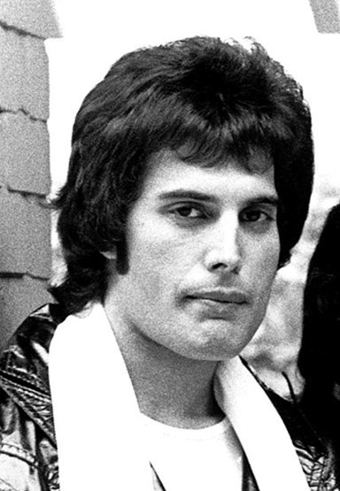

Freddie Mercury †
Freddie Mercury, nacido como Farrokh Bulsara en 1946 en Zanzíbar (hoy parte de Tanzania), fue un cantante, compositor y líder de la banda británica Queen. Conocido por su poderosa voz y su carisma en el escenario, Mercury ayudó a Queen a crear algunos de los éxitos más icónicos del rock, como *"Bohemian Rhapsody,"* *"We Will Rock You"* y *"We Are the Champions."* A lo largo de los años 70 y 80, la banda se destacó por su estilo innovador y teatral, y Freddie se consolidó como un ícono por su estilo único y energía. Mercury fue uno de los primeros artistas de alto perfil en admitir públicamente que tenía SIDA, falleciendo en 1991. Su legado perdura y sigue inspirando a millones de personas en todo el mundo.